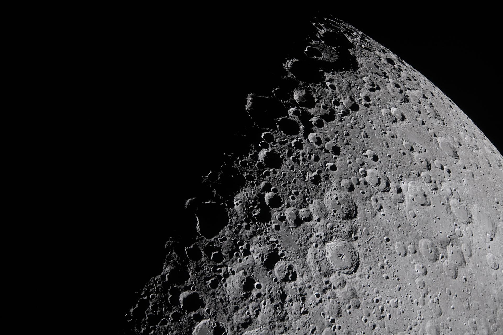
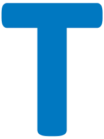
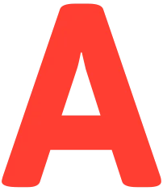
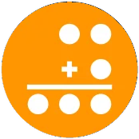
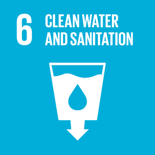
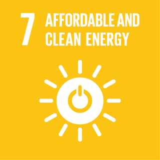
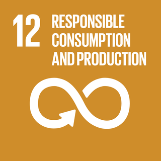

Ciencia
Física y química del hielo lunar: cómo queda atrapado a unos 40 K en los cráteres en sombra, cómo se sublima en el horno y qué impurezas trae. Biología de los microorganismos del biofiltro.

Propuesta de ingeniería para el polo sur lunar: un rover autónomo que busca hielo bajo el suelo, decide dónde vale la pena perforar y lo convierte en agua.
Faros, cámaras en un mástil que gira y paneles solares que cargan la batería mientras está al sol.
Un espectrómetro de neutrones nota el hidrógeno del hielo hasta cerca de 1 m de profundidad.
Solo si hay hielo suficiente, el terreno es seguro y queda batería para volver a la luz.
Un brazo de cuatro articulaciones lleva cada muestra a un cartucho sellado y frío.
Render de Blender con trazado de rayos · diseño propio de ICEWISE
Cerca del polo sur, el fondo de muchos cráteres nunca recibe luz solar. A unos −233 °C, el hielo de agua se ha conservado durante miles de millones de años.
Sin Sol no hay energía solar ni luz para las cámaras.
El hielo está repartido en manchas, bajo una capa de polvo seco.
Con poco hielo, casi toda la energía se gasta en calentar roca.


La colonia ICEWISE se ubica en el borde de Shackleton, a 89,6° de latitud sur, a pocos kilómetros del polo. Es una de las regiones que estudia el programa Artemis.
*Calculado por ICEWISE con el relieve real: fracción de direcciones del Sol en las que el horizonte no lo tapa. El interior de Shackleton también está en sombra permanente, pero su borde opuesto queda fuera de este mapa y no lo podemos calcular aquí.
La idea es la misma de todo el proyecto: energía arriba, hielo abajo. En el borde casi siempre da el Sol, así que ahí van la estación y la colonia. A unos cientos de metros, en el fondo de cráteres pequeños, nunca da el Sol, y ahí se conserva el hielo.
Energía en la cresta iluminada, hielo en el fondo oscuro del cráter. El rover va y vuelve entre los dos.
Un tablero con las 15 variables del modelo y todo lo que calculan. Se basa en las propiedades térmicas reales del suelo lunar: mueve cualquier variable y mira cómo cambia todo al instante.
Sí, por partes. Ninguno une las mismas piezas que ICEWISE.
Extrajo, capturó y purificó agua de suelo lunar simulado con hielo, en vacío y con hasta 13 kg por prueba. Su cadena de limpieza combinó microfiltración, ósmosis inversa, carbón activado e intercambio iónico. Alcanzó el nivel de madurez 4 (validado en laboratorio). Es lo más cercano a nuestra planta.
Paragon Space probó que una trampa fría separa el agua de parte de los contaminantes. La NASA ensaya biorreactores de membrana que eliminan amoníaco del agua de las naves con bacterias, la misma idea que nuestro biofiltro.
Unir un rover que busca y decide dónde perforar, la planta de extracción, un biofiltro con organismos resistentes a la radiación y la entrega a una colonia en Shackleton. Todo dentro de un mismo sistema y simulado sobre la topografía real.
ESP32, sensores sencillos y un lecho de arena con zonas húmedas o congeladas. Demuestra el ciclo completo; no imita las condiciones lunares.
Chasis 4WD con sensor de distancia para esquivar obstáculos.
Un sensor de humedad hace de “detector de hielo” sobre la arena.
Taladro con motor paso a paso; una balanza pesa la muestra.
Calienta la muestra y condensa el vapor en una placa fría.
Cada letra es una parte real del proyecto: de la química del hielo al diseño del rover.
Física y química del hielo lunar: cómo queda atrapado a unos 40 K en los cráteres en sombra, cómo se sublima en el horno y qué impurezas trae. Biología de los microorganismos del biofiltro.

Los sensores del rover (espectrómetro de neutrones, LiDAR y cámaras), el ESP32 del prototipo, la simulación 3D con el relieve real de la NASA y KILLA, el asistente con inteligencia artificial.
El diseño del rover y de la planta: taladro de 1 m, horno, trampa fría y biofiltro, el balance de energía y la lógica que decide dónde vale la pena perforar.

El diseño propio del rover, de la estación y de la colonia en Blender, el vídeo renderizado y la identidad visual de la web: comunicar la propuesta de forma clara y atractiva.

El modelo de viabilidad: energía por litro, rendimiento del hielo y escenarios con datos medidos, con las gráficas y el informe en PDF del panel.
Aunque ocurre en la Luna, las ideas de ICEWISE también sirven en la Tierra.
Es un proyecto escolar STEAM: la web, la simulación y KILLA permiten aprender ciencia lunar de forma práctica.

Purificar agua con un biofiltro de microorganismos y filtros: la misma idea sirve para tratar agua donde falta en la Tierra.

Toda la misión funciona con energía solar del borde de Shackleton, y el modelo mide cuánta energía cuesta cada litro.
Usar los recursos del lugar en vez de transportarlos, con un rover autónomo que decide por sí mismo dónde trabajar.

El rover solo perfora donde hay hielo suficiente, para no gastar energía ni remover el terreno sin necesidad.
Se basa en datos abiertos de la NASA y la ESA (LRO, LCROSS, LUWEX) y en la cooperación internacional del programa Artemis.
Iconos oficiales de las ODS de las Naciones Unidas (versión en inglés). El contenido de esta web no ha sido aprobado por las Naciones Unidas y no refleja las opiniones de la ONU, sus funcionarios ni sus Estados miembros.